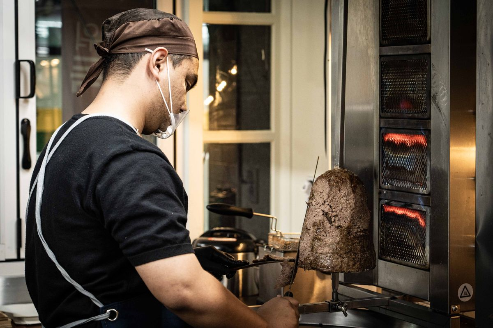

A shop built by people who could not find the food they wanted

I came to Korea to study when I was twenty. I started at Gyeongsang National University and spent six years here, all the way through graduate school. In a foreign country the hardest part was not the studying or the language. It was loneliness.
The lonelier I felt, the more I missed the food from home. But what I could eat near campus was the same every day — burgers, gimbap, burritos and sandwiches in rotation, and another week had gone by. Food was the best part of my day, so I went looking for the taste of home: Itaewon, Daegu, Daejeon, Gwangju, Busan, Ansan. It was not there.
So I started grilling it myself. First for close friends from university, then for the regulars at the place where I worked part-time. People who had never eaten it before enjoyed it, and watching them I made up my mind: one day I would open my own shop and share this taste with many more people.
Last year I opened that shop in front of Gaeyang Bus Terminal in Jinju. That is GNU Kebab. We use halal-certified beef and chicken, and in the kitchen our Uzbek-born cook grills it the way it is done back home. I wanted a place where Muslim students and first-time kebab eaters can sit at the same table.
We kept the original taste and made it easier to love. How the meat is prepared and grilled and what goes into it have not changed. We only spent a long time adjusting the spices and sauces that can feel unfamiliar the first time.
It started with kebab. Now New York's rice bowl, Australia's snack pack and America's walking taco — street food eaten all over the world — are made by my own hands in Jinju. For students who miss home, as I did, I hope it is a welcome meal. For anyone tired of the same lunch every day, a different one.
New to it? Try the mild white sauce.
— Rohan, owner of GNU Kebab